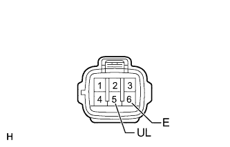

ENTRY AND START SYSTEM (for Entry Function) > Back Door Entry Unlock Function does not Operate |
| 1.CHECK POWER DOOR LOCK OPERATION |
When the door control switch on the multiplex network master switch assembly is operated, check that the doors unlock and lock according to the switch operation (Click here).
|
| ||||
| OK | |
| 2.READ VALUE USING INTELLIGENT TESTER (DOOR LOCK POSITION SWITCH) |
Connect the intelligent tester to the DLC3.
Turn the engine switch on (IG).
Turn the intelligent tester on.
Enter the following menus: Body / Main Body / Data List.
Read the Data List according to the display on the intelligent tester.
| Tester Display | Measurement Item/Range | Normal Condition | Diagnostic Note |
| Back Door Lock Pos SW | Back door lock / OFF or ON | ON: Back door unlocked OFF: Back door locked | - |
|
| ||||
| OK | |
| 3.READ VALUE USING INTELLIGENT TESTER (UNLOCK SWITCH) |
Using the intelligent tester, read the Data List (Click here).
| Tester Display | Measurement Item/Range | Normal Condition | Diagnostic Note |
| Tr/B Door Unlock SW | Back door electrical key switch (unlock switch) / ON or OFF | ON: Back door electrical key switch (unlock switch) pushed OFF: Back door electrical key switch (unlock switch) not pushed |
|
|
| ||||
| OK | ||
| ||
| 4.CHECK HARNESS AND CONNECTOR (BACK DOOR ELECTRICAL KEY SWITCH - CERTIFICATION ECU) |
Disconnect the X6 back door electrical key switch connector.
Disconnect the G26 certification ECU connector.
Measure the resistance according to the value(s) in the table below.
| Tester Connection | Condition | Specified Condition |
| X6-5 (UL) - G26-22 (TSW5) | Always | Below 1 Ω |
| X6-6 (E) - Body ground | Always | Below 1 Ω |
| X6-5 (UL) or G26-22 (TSW5) - Body ground | Always | 10 kΩ or higher |
|
| ||||
| OK | |
| 5.INSPECT BACK DOOR ELECTRICAL KEY SWITCH (UNLOCK SWITCH) |
|  |
Remove the back door electrical key switch (Click here).
Measure the resistance according to the value(s) in the table below.
| Tester Connection | Switch Condition | Specified Condition |
| 5 (UL) - 6 (E) | No switch pushed | 10 kΩ or higher |
| 5 (UL) - 6 (E) | Unlock switch pushed | Below 1 Ω |
|
| ||||
| OK | ||
| ||